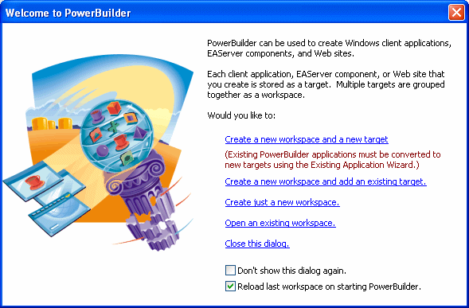
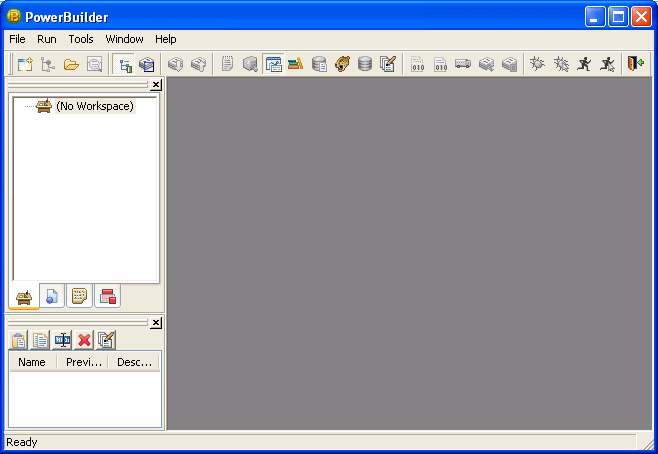
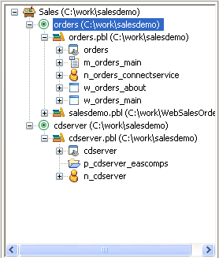
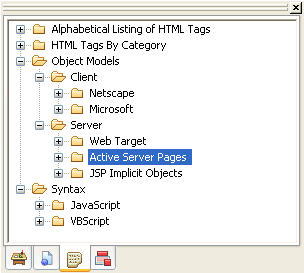
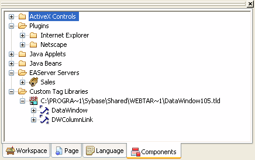
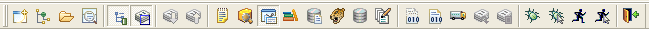
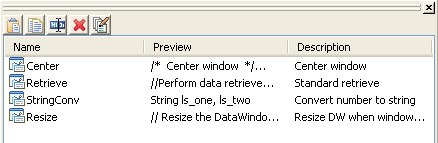
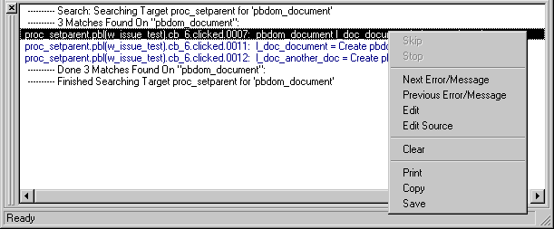

When you start PowerBuilder for the first time, the Welcome to PowerBuilder dialog box lets you create a new workspace with or without targets:

When PowerBuilder starts, it opens in a window that contains a menu bar and the PowerBar at the top and the System Tree and Clip window on the left. The remaining area will display the painters and editors you open when you start working with objects.

The System Tree provides an active resource of programming information you use while developing targets. It lets you not only get information, but also drag objects into painter views (such as the Script view, Layout view, and HTML editor) for immediate use.
The System Tree displays by default when you start PowerBuilder for the first time. You can hide or display the System Tree using the System Tree button on the PowerBar or by selecting Window>System Tree.
The Workspace tab page in the System Tree displays the current workspace and all its targets. PowerScript targets display the library list for the target and all the objects in each PBL. Web targets display the contents of the root folder of the Web target. The Workspace tab page in the System Tree works like a tree view in the Library painter, but you can keep it open all the time to serve as the control center of the development environment.
As in the Library painter, you can set the root of the Workspace page to your computer's root directory, the current selection, or any directory or library, as well as to the current workspace.
 Working with targets To see the pop-up menu that lets you perform operations on
a target such as search, build, and migrate, you must set the root
of the System Tree or the view in the Library painter to the current
workspace.
Working with targets To see the pop-up menu that lets you perform operations on
a target such as search, build, and migrate, you must set the root
of the System Tree or the view in the Library painter to the current
workspace.
The following illustration shows a workspace with two PowerScript targets. The first PowerScript target, orders, has a second library in its library search path.

You can use the Workspace page as the hub of your PowerBuilder session. Pop-up menus let you build and deploy targets and open and edit any object. The following table lists the actions you can take on each item that displays on the Workspace page. You can also set properties for each item, choose which object types display in the tree view, change the root of the Workspace page, and reset the root to the current workspace.
The Page tab page in the System Tree displays the Microsoft Internet Explorer object model and hierarchy for the page currently displayed in the HTML editor. This page is used only with Web targets.
The Page tab lists properties, methods, and events for the following types of objects on your page:
 If you are developing a Web target For more information on using the System tree when you are
developing a Web target, see Working with Web and JSP
Targets
. The Page and Language tabs are relevant only when
you are developing a Web target.
If you are developing a Web target For more information on using the System tree when you are
developing a Web target, see Working with Web and JSP
Targets
. The Page and Language tabs are relevant only when
you are developing a Web target.
The Language tab page in the System Tree lists the language elements available to Web targets:

The Components tab page in the System Tree displays the ActiveX controls, plugins, Java applets, and JavaBeans installed on your system as well as the EAServer components and JSP custom tag libraries accessible from your system.

Like the System Tree, the PowerBar provides a main control point for building PowerBuilder applications. From the PowerBar you can create new objects and applications, open existing objects, and debug and run the current application.

While you are getting used to using PowerBuilder, you can display a label on each button in a toolbar to remind you of its purpose. To do so, right-click a toolbar button and select Show Text from the pop-up menu.
Table 1-2 lists the buttons from left to right on the PowerBar.
| This PowerBar button | Lets you do this |
|---|---|
| New | Create new objects. |
| Inherit | Create new windows, user objects, and menus by inheriting from an existing object. |
| Open | Open existing objects. |
| Run/Preview | Run windows or preview DataWindows. |
| System Tree | Work in the System Tree window, which can serve as the hub of your development session. For more information see "The System Tree ". |
| Output Window | Examine the output of a variety of operations (migration, builds, deployment, project execution, object saves, and searches). See "The Output window". |
| Next Error, Previous Error | Navigate through the Output window. |
| To-Do List | Keep track of development tasks you need to do for the current application and use links to get you quickly to the place where you complete the tasks. |
| Browser | View information about system objects and objects in your application, such as their properties, events, functions, and global variables, and copy, export, or print the information. |
| Clip Window | Store objects or code you use frequently. You can drag or copy items to the Clip window to be saved and then drag or copy these items to the appropriate painter view when you want to use them. See "The Clip window". |
| Library | Manage your libraries using the Library painter. |
| DB Profile | Define and use named sets of parameters to connect to a particular database. |
| EAServer Profile | Define the connection parameters for a particular server. You can then use this predefined profile whenever you need to connect to EAServer. |
| Database | Maintain databases and database tables, control user access to databases, and manipulate data in databases using the Database painter. |
| Edit | Edit text files (such as source, resource, and initialization files) in the file editor. |
| Incremental Build Workspace | Update all the targets and objects in the workspace that have changed since the last build. |
| Full Build Workspace | Update all the targets and objects in the workspace. |
| Deploy Workspace | Deploy all the targets in the workspace. |
| Skip, Stop | Interrupt a build, deploy, or search operation. When a series of operations is in progress, such as a full deploy of the workspace, the Skip button lets you jump to the next operation. The Stop button cancels all operations. |
| Debug | Debug the last target you ran or debugged. You can set breakpoints and watch expressions, step through your code, examine and change variables during execution, and view the call stack and objects in memory. |
| Select & Debug | Select a target and open the Debugger. |
| Run | Run the last target you ran or debugged just as your users would run it. |
| Select & Run | Select a target and run it. |
| Exit | Close PowerBuilder. |
You can customize the PowerBar. For example, you can choose whether to move the PowerBar around, add buttons for operations you perform frequently, and display text in the buttons.
For more information, see "Using toolbars".
In the PowerBar, when you leave the mouse pointer over a button for a second or two, PowerBuilder displays a brief description of the button, called a PowerTip. PowerTips display in PowerBuilder wherever there are toolbar buttons.
You can store code fragments you use frequently in the Clip window. You copy text to the Clip window to save it and then drag or copy this text to the appropriate Script view or editor when you want to use it.
The Clip window displays a list of named clips, a preview of the information contained in the clip, and a description. It provides buttons to move Clip window contents to the clipboard, copy clipboard contents to the Clip window, rename a clip, delete a clip, and modify the clip's description. Clips you save in one workspace are available in all your workspaces; you might want to use a naming convention that reflects this.
For example, you might use standard error-checking code when you use the ConnectToServer function to connect to EAServer. To copy it to the clipboard, highlight the code in a Script view and select Copy from the pop-up menu. In the Clip window, click the Paste icon, and name the clip. The Clip Description dialog box opens so that you can enter a description. To change the description later, select the clip's name and click the Modify button.
You can drag a clip from the Clip window to any script in which you want to connect to EAServer. You can also use the Copy icon to copy the clip to the clipboard.
You can hide or display the Clip window using the Clip Window button on the PowerBar or by selecting Window>Clip.

The output of a variety of operations (migration, builds, deployment, project execution, object saves, and searches) displays in the Output window. You control operations in the window using the Skip, Stop, Next Error, and Previous Error buttons or menu options.
You can hide or display the Output window by using the Output button on the PowerBar or selecting Window>Output.
When appropriate, lines in the Output window provide links that invoke the correct painter when you double-click on that line. The pop-up menu also provides the options Edit and Edit Source to open an object in a painter or the Source editor.
